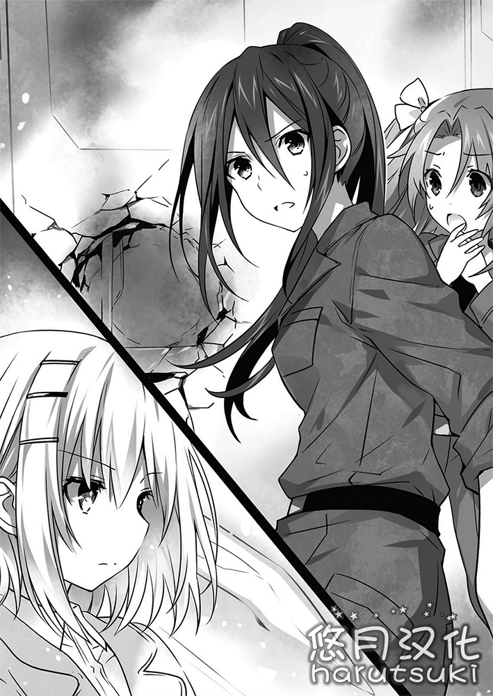

第三章 最后的休息
「…………」
少女依旧无言，视线慢慢扫过手中的书本。
接着，眨眼间，她就解读了记在那里的文字，没过几秒就翻起了页。
现在在她手中的貌似是叫历史资料集的书。是大致记载了上至这个世界构成时的历史的东西。
看样子好像原本是以学习为目的而编纂成的商品，因为用很平易近人的文章记载所以很好理解。刚才读完的叫小说的书，因为是刻意将本来一句话就能说完的事情故意用难懂的话表现，所以要想知道它的意图稍微要花点时间。
但是，这便是所谓人心的微妙之处。少女微微眯起眼睛，感受着震动着耳膜的声音。
现在，少女的周围放着好几个电视、广播与盒式磁带录音机之类的电器，各自发着自己的声音。报道。戏剧。落语。音乐。各种各样的声音重叠着浸染了少女的大脑。（注：落语就是单口相声。）
「……呼。」
到底这么做了多少次呢。少女啪嗒一声合上了最后一本书，轻轻叹了口气。
「……原来如此。大体上掌握语言体系了哟。」
少女边将附近吵闹着的电视与广播的电源切断边那么说道。
「…………」
然后，坐在少女对面的少年以及他的妹妹——好像是叫真那——目瞪口呆地看着少女。
「……？怎么了？」
「不，就算你问怎么了。」
「直到昨天为止都只会说『啊……』『唔唔……』的孩子突然这么流利地开始说话当然会吓一跳。」
少年与真那这么说完汗颜着惊讶地皱了皱眉。
「文字与声音的情报非常充足的话，从那些东西的共同要素来类推语言体系就是可能的哟。当然啦，因为含有许多推测的成分，不能否定细节部分存在差异。」
「不，光听你说的根本就是完美的吧。」
「嗯。或许比真那的日语更正宗吧？」
「因为兄长大人之后会暂时只能说『啊……』『唔唔……』，至少会比兄长更正宗呢。」
真那露出了和蔼的笑容拿起了竹刀袋。少年慌忙制止了她。
「慢着，冷静。我喜欢有个性的你。」
「你明白就好。」
真那呼了口气叉起胳膊。少年抚了抚胸口。
这时真那像是想起了什么一样将看了过去。
「——对了。会说话的话就能问了。」
「……？什么？」
「你到底是谁？你的力量明显不一般。据兄长大人说，你处在昨天的那场大爆炸留下的空地中，那不会是你干的吧？」
眼神尖锐的真那问道。
尽管如此，那也不是没有道理的。电视上的新闻报道净是关于昨天袭击关东的大灾害的事情。在那现场的人要是就在眼前的话，是不可能不在意的。
但是。少女犹豫片刻后摇了摇头。
「……抱歉。我不知道。」
她老实地那么回答道。
事实上，她连对自己都什么也不明白。自己到底是谁，为什么会在那里。
「嗯……我不觉得她在说谎呢。」
「那你能说说你知道的事吗？那个，什么，你的事——我想了解。」
少年温柔地打听道。不知为何真那那样斜视着少年，无奈地耸了耸肩。
「知道的事……」
少女像是搜寻记忆般垂下了双眼，用刚刚才记住的语言将脑海中浮现的零碎的情景表现出来。
「我记得的是……一片地平面。还有……三个人类。两个年轻男人与一个少女。虽然我不知道他们那时在说什么——但我觉得那大概是被叫做英语的语言。」
「三个人类……？」
「一片地平面……要是与爆炸有关的话，难道是欧亚大空灾吗？不，但是，要是那样的话不应该有人……」
「我不知道。集中，生出……创造出？感觉就是那类的词。之后是……——」
少女感到轻微的头痛，将手放在额头。少年很担心般探过头去。
「没，没事吧？不要勉强自己。」
「没事。就是感觉有点痛。」
少女说完后，少年放心般地舒了口气。
看到那副情景，真那纠结地挠了挠头。
「嘛……想不出来也没办法了呢。那方面就慢慢想吧。」
然后真那将前发捋了上去，对少女投出了锐利的视线。
「——那么，既然语言已经相通了，我就把我对你坦率的感想告诉你吧。」
「感想……？」
「对。老实说，你太可疑了。我觉得马上联系警察让你得到保护是最明智的。」
「真那……」
少年对真那露出为难似的表情。
真那哈地长叹了一口气继续说道。
「……话虽如此，其实我并不情愿这样。什么都没有就造出衣服，不会的语言马上就学会……不管怎么想都不是普通的人类。如果随意放出去，被当作研究机构的小白鼠，那种可能性也是有的。想想就毛骨悚然。」
真那叉着手说完后，少年的表情一下子变得明朗了起来。
「…………」
不一会儿，少女也能理解听到的情报了。
准确的说，话的意思虽然马上就明白了，但要理解他们在表达着怎样的意图，却还需要点时间。
看样子他们好像是打算将自己留在这个地方。
「为什么……把我？」
「诶诶……听懂了那种话吗？这不是顺着气氛就能说OK答应的吧？这种情况，反正你也没什么地方去吧？」
「虽然确实那样。」
「那这不就好了吗。你……那个。」
这时真那困扰地挠了挠脸颊。
「说起来，我还不知道你的名字呢。你有名字吗？」
「名字……」
名字。名称。是为了区别事物的记号。说起来自己还没有那种东西。
少女沉默不语，真那像是在说「也是呢——」般耸了耸肩。
「不好办呢。也不能一直都称呼为『你』。有什么——」
「——澪。」
这时。
真那正说到一半，少年那样说道。
「诶？」
「…………？」
真那与少女瞪大眼睛看着少年。少年不知道是不是没想到会被做出那种反应，有点尴尬般挠了挠脸颊。
「呀，很奇怪吗？我倒觉得是不错的名字吧……」
「不，并不奇怪哟。因为兄长大人的起名品味有点脱离常识，所以是个意料之外的好名字。」
「诶诶……」
听到真那刻薄的话，少年流下了汗。不过真那没有在意他继续说道。
「有什么由来吗？是漫画的女主角的名字，还是给脑子里的恋人起的名字所以才一下子从心里说出来了。」
「不不，不是那种夸张的事。只不过，你看。相遇的日子是30号吧？所以说30（mio）……什么的。」（日向龍ノ介：澪的读音也是mio，3就是mi，0就是o）（混沌圣歌：和当年给十香取名字的方法一样啊喂。）
「……唔，嗯——……？」
真那复杂地皱起了眉头。怎么说呢，是那种虽然太简单了，但因为名字本身没什么不好的所以很难否定的表情。
「嘛、嘛，不过不能不问一下本人。——呐，怎么样？」
「诶——？」
被少年这么说了后少女瞪大了眼睛。
这时少年终于有了他给少女起了名字的实感。
「嘛，因为还要对外的，如果就这么过下去的话，当成我们的亲戚好像也没什么不行的。所以，全名就叫『崇宫澪』吧。」
「崇宫，澪……」
少女将那个词——自己的名字，下意识地启唇念道。
只有三个字。
发音只有六个音。（日向龍ノ介：这里指的是假名的发音）
仅此而已的文字组合。
不过，是为什么呢？那些字从喉咙中发出来的时候，少女感觉到心中有温暖的东西慢慢扩散开来。
然后与此同时——脸颊上也感受到了有什么在慢慢移动的感觉。
「哇！」
「诶……！？」
少年与真那露出了很惊讶的表情。
「……？」
少女歪了歪头，但很快就注意到了其理由。
自己的眼睛在滴滴答答地溢出液体。
用刚刚才学到的语言来表现的话，这是被叫作眼泪的液体。
「诶……好奇怪呢。为什么呢，这样……」
少女为了防止多余的液体流出用手按住眼角，但眼泪还是止不住地流。
「呜，啊，啊啊。」
接着与此相称，心脏如被用力拧着般的感觉向她袭来，让她的身体向前弯下。
「兄长大人。」
「……啊啊。」
之后，看见那一幕的真那与少年露出了淡淡的微笑，扶着少女两边让她坐下，温柔地抚着她的后背。
用后背感受着那份舒适的触感，少女——崇宫澪，在那段时间一直哭着。
◇
在〈Fraxinus〉中举行了作战会议后的第三天。
折纸陪着真那去拜访位于天宫市外的陆上自卫队天宫驻地附近。
「呀——……这里也好久没来了呢。」
抬头看着长长的连在一起的围栏，真那感慨颇深地说道。折纸微微地点了点头回应后，边用智能机确认了一下时间边慢慢地走进去。
折纸与真那以前是属于这个天宫驻地的，分别是一等陆曹与三等陆尉。（混沌圣歌：陆曹和陆尉皆为日本士兵等级。）
当然了，从年龄的角度来说，身为初中生与高中生的两人本不应所属于自卫队。
但是，要是加上「魔术师」的条件的话情况就不一样了。
——这是对外保密的对精灵部队，通称AST。
为了打倒被称为毁灭世界的灾害的存在——精灵而组建的这个部队的战斗成员仅限于用外科手术在脑中植入电子部件，成为能凭个人运用显现装置的人类——魔术师。
不过，无论历经多么严酷的训练，无论植入多么高性能的机械，没有适性的人就是不能操作显现装置（Realizer）的。
因为拥有魔术师（Wizards）的才能，还有着愿意做严酷的任务的意志的人完全不多，所以像折纸她们一样的年轻队员也不得不让她们从属于自卫队。
嘛，准确的说，真那并不是AST的正式队员，而是从DEM社调来的。
沿着围栏走着时，真那突然发出了声音。
「但是，折纸小姐。」
「你叫我嫂子也没关系。」
「……折纸小姐已经被除籍了，我也以与背叛一样的形式逃离了DEM。我们真的要从正门进去吗？」
折纸回应后，真那不知为何特别强调称呼般地继续说道。嘛，比起以前的「鸢一一曹」算还不错了。折纸稍微觉得有点遗憾地回答道。
「那个没问题的。——快到了，约定之地。」
「约定？」
真那听到折纸的话感到奇怪地歪了歪头。
然后，简直就像配合折纸一样，朝着围栏的方向传来了微弱的声音。
「——折纸小姐，真那小姐。这边。」
「诶？」
突然的呼叫声让真那转了过去。折纸也配合似地转向了声音的方向。
接着，她们发现围栏那头的草丛中有两个小巧的少女探出了脸。
一个是头发系了两个结的小猫一样的少女。另一个是有着金发戴着眼镜，以此为特征的混血少女。
是AST队员冈峰美纪惠二等陆士与AST的机械师米鲁德雷特·F·藤村二等陆曹，通称米莉。两人都是折纸过去的同事。
「冈峰二士与藤村二曹？为什么在这种地方……」
真那问完后，美纪惠微微点了点头，轻轻地指向近处的小门。这种小门应该在两边都有锁的——
「米莉小姐已经把锁打开了。进去的时候请不要被人看见。」
「呼哼，对付这种老旧的圆筒状锁，对装备了CR-unit的人来说是轻易就跟折断婴儿的手臂一样哟——」
「……这个在有点困难之上还有很重的罪恶感呢。」
看着得意的米莉，真那半睁着眼。
不过这么互相对话后，真那也貌似理解了刚才折纸说的话的意思。
「原来如此……这样的话就能顺利出入了呢。」
「就是这样。」
折纸简短地回答后，迅速确认了附近没有人看着，就将门开到必要的最低程度将身体滑进去。那敏捷的动作让真那吹了下口哨，学着折纸跟了过去。
不过，还不能大意。她们观察了基地内的情况，迅速地藏在暗地里移动，好不容易来到了AST的兵舍。
来到这儿的话，大概就不用担心被普通的自卫队员看到了。折纸她们终于稍稍松了口气。
「好久不见了，折纸小姐。好像从年底在漫画圆形剧场以后就没见过了呢。」
「好久不见。那个时候受你帮助了。」
「…………」
折纸简短地回答后，美纪惠露出复杂的表情汗颜了。
「什么？」
「不……果然，折纸小姐感觉变了呢……」
说完后，美纪惠作出了苦笑。
嘛，也是。这个世界曾一度被士道亲手「改正」过。美纪惠记忆中的折纸与现在两个折纸合一的折纸印象不一样也不是没有道理的。
「果然……那个，交了男朋友后就有改变了吧。」
「是的。我的身与心都被染成了他。」
折纸立即对美纪惠的话这么回答道。美纪惠不知为何露出了受惊的表情。
顺便一提这期间虽然旁边的真那用不高兴的眼神盯着折纸，但折纸并不懂她的意思。……是想对大嫂撒娇吧？
「比起那个。」
「对，对……在这边。」
折纸催促后，美纪惠像是为了重新振作起来一样摇了摇头，带领着折纸与真那。
跟着美纪惠走在令人怀念的兵舍中，不久终于走到一个门前。美纪惠清了清嗓子，咚咚地敲了敲门。
「队长，我是冈峰。」
「进来。」
马上就有那样的声音回应了美纪惠的话。美纪惠看了一眼折纸轻轻点了点头打开了门。
「——好久不见了，折纸。想不到还能和你在这里见面啊。」
折纸与真那进入房间后，坐在正面的椅子上的女性发出了这样的声音。
年龄差不多二十五岁多。从陆自工作服中露出的胳膊与脖子有着尽管不引人注目却充满弹性的肌肉。——日下部燎子一等陆尉。是折纸与真那的原上司，AST的队长。
然后，在房间里的不只是燎子。在燎子的左右与后方有着面熟的人。都是折纸的原同事。是一起奔赴战场的AST的魔术师们。
不过，折纸与真那并没有太惊讶。说到底说着很难却把大家聚集起来的就是折纸。
「那么，特意过来有什么事吗？而且还把通缉犯真那都带过来。」
「诶？通缉犯？」
听到燎子的话，真那瞪大了眼睛。燎子像是在说「不知道吗？」一样歪了歪头。
「当然不是公开的，不过DEM发出通知了哟。原Adeptus Number，Mana·Takamiya在战斗中逃走，之后妨碍DEM的活动。抓住她的人听说有100万美元哟。」（混沌圣歌：Mana Takamiya就是真那的读音）
「吓，真那我也终于被悬赏了吗？——那么，你们抓我吗？」
真那说完后，燎子用鼻子哼了一声。
「真不凑巧，我能做到的只有减少部下与装备的损失这种工作呢。」
「啊哈哈，队长的这个部分，我并不讨厌哟。」
真那笑完后，燎子又叹了口气将视线挪回到了折纸身上。
「我们也并不闲，直奔主题吧。虽然抱有过去的友谊，但也请不要说非常不愉快的事哟？」
「那还真是，抱歉。不过，请听我说。」
折纸说完后，以燎子为首的AST众人都深深地叹了口气。
「……嘛，随便了。那么，是什么事呢。」
燎子像放弃般耸了耸肩问道。折纸点了点头继续道。
「AST收到了DEM的出动请求了吧？」
「哈？你突然说什么啊？DEM的……？」
说着燎子看了一眼部下。于是被看到的部下也像是在说「没有印象」般摇了摇头。
看样子请求还没有发出。折纸看着燎子的脸继续道。
「——二月二十日。恐怕天宫市周围会发生大规模的战斗。那时，DEM有可能也会给AST出动请求。但是，我希望大家无视它。」
没错。
折纸与真那用决战之前的宝贵时间拜访这里的理由就是这个。
DEM会动员拥有的所有魔术师战力、〈Bandersnatch〉、〈尼别科尔〉来取士道的性命。这样的话，他们请求AST来帮助也很容易猜想到。
当然要是直接战斗的话，精灵们也许并不会输给她们吧。但她们与DEM的自动人偶不同，是纯粹为了守护国家、守护人们而战的义士们。要是和她们对立的话精灵们也可能会产生犹豫，DEM也会盯上这一点将她们当做护盾吧。可以的话，希望在现在就将那份担忧给提前消除。
「……哈？」
燎子，准确的说是连同与她在一排的AST队员全体，都对折纸的话瞪大了眼。
「战斗？究竟是谁和谁的。」
「DEM与〈Ratatoskr〉。以及，或许〈Nightmare〉时崎狂三也会加入。」
「等、等等。你在说什么——」
「听着。」
折纸像是要盖过燎子的话一样说完后，开始将现在的情况概括说明。
DEM的目的。精灵的存在。以及与其有关的名为〈Ratatoskr〉的组织的事。
当然，说明有关〈Ratatoskr〉的存在也是取得琴里的许可的。情报虽然有取舍，但折纸尽量不想用谎话。
因为不管多合情合理，假话会产生不信任感，真实的价值也会被掩盖。
即使100句里面只有一句是骗人的，听到这句话的对方也会怀疑其他的是不是也是伪造的。像现在这样希望让对方相信自己的话的时候，那也许会成为致命的失误。
「……简单来说，就是这样。」
「…………」
折纸将事情说明后，燎子与美纪惠她们回以各不相同的反应。
有惊讶地瞪大眼睛的人，有以手扶额手似乎在思考的人，有惊讶皱眉的人……虽然有各种各样的反应，但相同的是她们似乎都因为折纸突然的话语而困惑着。
不过那也不是没有道理的吧。要是在过去所属于AST的时候被这么说的话，折纸也一定会露出和大家一样的表情的。
「…………这算什么啊。」
不知过了多久，燎子用沉重的语气开了口。
「保护精灵的秘密组织？不管怎样都荒唐过头了吧。你要我相信这种玩笑而顶住DEM的帮助请求？」
「哦呀队长，你相信了会有帮助请求的那部分了呢。」
「……不要揪字眼啊。」
燎子用锐利的目光瞪着真那。真那说了「失敬了」后，做出不像嘴上说的那样觉得有错的表情耸了耸肩。
「虽然你们大概也懂，但顶住DEM的请求是与无视上面的命令是一个意思的哟。对我们来说是要因失职被判刑的哦？」
「在那之前全员辞职也没关系。不管怎样，再就职的事我会麻烦〈Ratatoskr〉的。」
「你啊……」
燎子乱挠了一通头发，重重地叹了口气。
「不管是不是听从命令……叫我们不要攻击精灵是什么意思啊。那可是引起空间震的人类的天敌吧？我们可是一直为了从那东西手上守护大家才……」
「精灵是只有破坏想法的生物这个情报本身应该就是DEM的政治宣传。我们从一开始就被DEM彻底地玩弄于掌心。」
「…………」
燎子沉默不语，一直盯着折纸的眼睛看。简直就好像是为了抓住藏在其深处的真正的意图一般。
然后不知道是不是因为不能忍受那样的沉默，在旁边的美纪惠交替着看折纸与燎子的脸发出了颤抖的声音。
「我、我不觉得折纸小姐是在说谎……」
「啊哈哈——，虽然我出不出战都行，不过那个是叫〈Ratatoskr〉？的对吧？它们好像搞了那边的显现单元的样子呢——。那样的话就让我在那里再就职吧？米莉很有才哟——。能帮忙哟——。」
「……很抱歉，但请稍微安静点。」
燎子对美纪惠和应和着在说的米莉低声地说道。美纪惠肩膀一个哆嗦，米莉回了一个愣愣的笑。
燎子在那之后又恢复了沉默，不一会儿后叹了一口很长很长的气。
「…………办不到的吧，这种事。」
「队长……！」
美纪惠向燎子的方向踏出了一步，恳求般地说道。
不过折纸在美纪惠之前伸出手制止了她。
「折、折纸小姐……」
「可惜了。但是，我无法责备队长的选择。」
折纸低下眼后，像是为了转换心情般再次睁开了眼睛。
本来她就不觉得燎子她们会简单地相信自己的话。——不，更准确地来说，折纸觉得即使取得了她们的信任，她们也断然不会采取合折纸的意的行动。
折纸看向真那，顺势转身。真那叹了口气，跟在了她的后面。
「…………」
刚要出房间，折纸突然停下了脚步。
「……如果你们听从请求去战场的话，尽量将〈Bandersnatch〉作为盾在其后方落下。」
「诶……？」
「可以的话，我不想杀了你们。」
折纸说完后，燎子愤然地呼了口气传来了咔哒一声从椅子上站起来的声音。
「……什么啊。不是完全被小瞧了吗？确实你是个技术优秀的魔术师，但我们也不是玩玩的——」
瞬间，与咻的一声那种小小的声音的同时，燎子的声音停了下来。
不过，那也是理所当然的。要是空中突然出现毫无生命感的羽毛状的东西，并从其前端放出光线的话，任谁都会做出那种反应吧。
光线掠过燎子的脸颊，炸裂了墙壁，从墙上吱吱地冒烟。
「拜托了。」
「…………唔。」
听着背后的队员们屏息的声音，折纸与真那离开了房间。

◇
「……嗯？」
地点是五河家旁边的精灵公寓。在公寓的走廊里迈步的七罪因传入耳中的轻响而不由止步。
「？怎么了吗，七罪小姐。」
「是鞋带开了吗？哎呀真是不吉利！」
走在她身边的四糸乃见状歪了歪头，而戴在她左手上的兔子玩偶『四糸奈』则灵活地用短短的前爪捂住自己的脸说道。为防万一七罪在瞥了自己的鞋子一眼后摇了摇头。
「不是那回事啦……你们没听到有什么声音吗？」
「声音……吗？」
「嗯，是从这个方向……」
说着，七罪蹑手蹑脚地走了起来。
在这以万全，不，应该说是过度的安全防护为傲的公寓里固然不会发生入室盗窃……不过，这也是自己的秉性使然。七罪一边在心里自顾自地解释，一边向音源处移动。
「那边是……」
「是厨房来着？可能是谁在做料理吧？」
『四糸奈』一边摆头一边接着七罪的话说道。
正如『四糸奈』所言，那边是设置在公寓一层的大型厨房。据琴里所说那是为了让精灵们一起做料理而准备的设施。之前的情人节，大家一起做巧克力的事至今还记忆犹新。
「到底是谁在那里呢？」
「谁知道呢……」
语毕七罪战战兢兢地向里面窥探。
紧接着。
「呼嗯。此事颇为不易呢。如此可否？」
「唔姆！做得很棒嘛六喰！那样应该挺不错的！」
「……呣，十香，汝所做的大小甚为不俗啊。」
「呣？是这样吗？我这就是手掌尺寸不是么？」
「…若六儿所知不虚，所谓手掌尺寸当是一掌便可容纳之大小，而非汝这足可尽覆双掌之大小。」
看到的是两名做出以上这番对话的少女的背影。
「十香和……六喰？」
目瞪口呆的七罪说道，随即，听到她的声音的十香和六喰便转过身来。
「哦哦，这不是七罪和四糸乃还有『四糸奈』吗！」
「唔嗯。缘何，汝等会身在此处。」
「不是，是因为听到了什么动静就……不如说你们才是，到底在干什么……」

话说到一半，七罪的眉梢动了几下。
随着十香和六喰一转身，她们手中的东西自然也映入了七罪的眼中。将蒸好的米饭用手固定成白色的三角形。没错，正是饭团。
「诶，这是，刚才不是已经吃过饭了么。这就肚子饿了？十香姑且不说，连六喰都……」
说着，七罪感到自己的视线下意识地就射向了两人的胸口。十香自不必说，就连六喰那小巧的身体都拥有难以想象的傲人胸围。……果然「有料之人」的营养都会向「那个部分」变换吧？
就在七罪沉浸在这般思考当中时，十香和六喰的胸怦然摇动。不，胸部的摇动只是副产品，准确来说是两人将脑袋横着摇了摇才对。
「不是这回事啦。……不，虽然我确实也想吃，但是并不只是这样。」
「……那是怎么回事？」
「唔嗯。如今官人和女妹等人，正为行将来临之战做着准备。耗费心神想必会招致空腹呐。」
听到两人这么说，四糸乃啪地一声拍了下手。准确来说，是用『四糸奈』的手。
「啊……难道说是在准备慰劳品吗？」
「唔姆！」
「正是。」
语毕十香和六喰将手中的饭团抬了抬用以示意。七罪便「……原来如此。」地点了点头。
「……嘛，挺好的不是吗。士道他们肯定会很高兴的。」
「哦哦，七罪也这么觉得！？」
「诶，是啊，嘛。」
七罪撇开视线回答道，听到她的话十香的笑容更加灿烂了。……顺带一说，七罪撇开视线并不是因为自己的话中藏着假意或是另有深意，单纯是因为十香那闪闪发光的视线太耀眼了而已。七罪最近都开始怀疑自己的祖先中是不是有吸血鬼了。
这时，十香似乎是想到了什么而向七罪和四糸乃出声道。
「对了，要是现在有空的话，七罪你们也来一起做怎么样？这个很有趣的哦！」
「诶……？不，不了，我就……」
十香突然发出的邀请令七罪一时不知所措。
然而身旁的四糸乃和『四糸奈』却一副「就等你这句话了！」的模样，眼神中充满了期待的光辉。
「可以吗……？那就请让我们也参加吧。我们也想为大家尽一份力……！」
「妞呼呼，四糸奈的肉垫已经饥渴难耐了！……诶？你说兔子爪上没有肉垫？呜呼呼——，小孩子太机灵的话可不会受欢迎的哟。」
如此这般，两人都是一副兴致勃勃的样子。七罪不禁流出几滴冷汗。
「我，我的话就算了吧……毕竟——」
「七罪小姐也……一起来吧。大家一起做的话，一定会很开心的。」
「诶，不，那，那个。」
被四糸乃这么一说，七罪立马语无伦次起来。黏糊糊的汗水自全身涌出，心脏也砰砰地高鸣起来。
其实倒也不是说自己不擅长做饭团，更没有对大米有过敏反应，当然更不是出于不愿意慰劳士道和琴里他们这样的理由。
原因其实更加的单纯和简单。请简单地想象一下。所谓的饭团，正如其名，是要用手将饭捏成团的料理。
——没错，厨师，用双手，直接。
明明就连普通的手制料理都会让大家有所犹豫，要是换成被七罪的手碰过的食物，那就更不会有人想吃了不是吗……！
七罪做的饭团什么的，除了让轰炸机载满了之后一股脑往敌国境内撒个够，或者是拿到几天不给供饭的俘虏面前，伴着「要是不想饿死的话那你就吃这个吧。不过，这可是七罪做的饭团哦！呀哈哈哈哈哈！」这样的话赐予其绝望感之外，也派不上其他用场了吧。想必俘虏虽然会为了守护自己那作为人类的尊严而一直坚持不吃，但最终还是抵不过空腹的痛苦而下了口，结果在地狱般的痛苦中断气吧。……总觉得各种残酷到没朋友，反而能在某种意义上得到有效的活用。
不过，就算再怎么没脑子也绝对不能给自己的同胞吃这种东西啊。想到这里七罪一脸苦涩地摇了摇头。
「不，不了……我捏出来的饭团混进大家所捏的饭团之中什么的，那已经可以说是投毒事件了。是触犯法律啊。」
说着，七罪退了一步。
「那种事……」
见状四糸乃吞吐了一下后，旋即便以充满决意的眼神看向七罪。
「七罪小姐，请把你的手伸出来。」
「诶……？这，这样吗？」
尽管不知四糸乃意欲何为，但七罪还是将自己的右手伸了出去。
紧接着，四糸乃在紧紧地盯着七罪的手看了片刻之后。
「哈呣。」
地一声，轻轻咬住了七罪的手指。
「呀！？四，四糸乃！？」
事出突然，七罪不由惊叫道。随后四糸乃左手上的『四糸奈』吧嗒吧嗒地动嘴讲道。
「诶——，因为四糸乃现在在忙，所以就由四糸奈我来替她说了。七罪小姐的手才不是什么毒呢！四糸乃是想这么说哦！好帅气呢！简直迷死人了！」
「啊，啊诶诶……」
一时间又是诚惶诚恐又是深感罪孽又是钦佩不已，形形色色的情感在脑海中交融。七罪的脸上沁出各种各样的体液，表情已经彻底停摆了。
不过这还没完。看到这一连串的事情，十香「哦哦！」地像是领悟了什么似的击打了下手掌后，牵起七罪的左手像四糸乃一样含住了她的手指。
「呀————！？」
双手全被按住，令七罪眼前一黑。
「呼呣？」
接着在一旁将前前后后都看在眼中的六喰兴致颇丰地迈出一步。
不过如今七罪的左右两只手都被四糸乃和十香占据，六喰见状稍稍迟疑了片刻——
「姆嗯。」
似乎是想到了什么点子，六喰用双手把住了七罪的脸，接着把嘴一张，缓缓地向七罪的脸靠近。
「……！？我，我知道了！我知道了啦！我也会和你们一起做的快停下……！」
七罪拼命地诉求道，于是大家也都开心地回复到了原来的姿势。
「唔姆，那就快开始吧！」
「姆嗯，于那处洗手便好。」
「那，那个……刚才不好意思，七罪小姐。但是我无论如何都想和七罪小姐一起来……」
「……啊，那个，嗯。谢谢。」
七罪红透了脸回应道，见状四糸乃的表情立马明朗了起来，并且开心地露出了微笑。
……算了，事情变成这样的话就无可奈何了。七罪一边联想着即将食用自己的饭团的受害者，一边为了祈求他们的安息而在胸口画了个十字。
接着七罪和四糸乃一起洗过手，再给『四糸奈』戴上料理时使用的特制罩子，再次回到了十香她们的身边。
「好了……那就开始吧。十香你们已经做了几个了？」
「我和六喰都只做了这一个！毕竟才刚开始嘛！」
「姆嗯。」
说着两人将先前拿在手里的饭团展示给七罪。六喰做得倒还算的过去，可十香这个的尺寸就有点出格了。
「怎么样？做得还可以吗？」
「诶诶，这个嘛……形状的话还可以吧？就是十香的饭团怎么看都有点太大了。」
「呣，这样吗。那这个就留给我自己好了，给士道的就再做个新的好了。」
说着，十香将超大号饭团搁在了大盘子上，接着用手指朝饭团里面咕噜咕噜地钻出一个口。
「十香小姐？」
「这是在做什么？」
「唔呣，这是要把馅料添进去。其实我也想像士道那样连饭带馅一气呵成的，可是那个实在是有点难。所以没办法只好先把形状捏好，接着再把馅往里面添了。」
「这样啊，原来如此。」
七罪点了点头以示明白。如果将馅料捏进米饭中的话，确实会比只捏米饭更加难以固定形状。
乍一看去，可以发现料理台上准备了各种各样的馅料。有酱油拌的鲣鱼、昆布佃煮、大块的鳕鱼子、以及莫名多的鲔鱼沙拉酱。特别的还有怎么看怎么觉得是预先炸好的鸡肉、已经切得恰到好处的炖肉等等。可称得上是饭团馅料全明星了。
「呼呼，哼哼哼——。」
十香一边哼着歌一边物色要添加的馅料。
不过，在这途中，只见她的肩膀抖了一抖，哼的小调也停了。
「……好的。」
接着，十香就像是下定了什么决心一样点点头，将手伸向了某个盘子。看到装在盘子里的东西，七罪和四糸乃都瞪大了眼睛。
「等等，那不是梅干吗？」
「十香小姐，这个你不是不喜欢的来着……？」
听到两人的话，十香像是在表示「我知道。」一般使劲点了点头。
随后，她以充满决意的目光看了过来。
「唔姆……确实这个很酸所以我不是很喜欢。但是，正因如此现在我才要克服！如果连梅干都赢不了的话，我又怎么能战胜DEM呢！」
说着，十香攥紧了拳头。看着那副坚强的模样，七罪等人不由得鼓起了掌。
「原，原来如此……嗯，虽然理论不是很懂不过能理解到你的觉悟。」
「十香小姐，好厉害……！」
「呼嗯……真叫人钦佩，十香。如此六儿便也做好觉悟吧。」
语毕，六喰以缓慢的步伐走到料理台旁边，用手从中拿起了某个盘子。
「酒糟腌山萮菜唷。此刻便为汝和六儿之间的漫长因缘打上休止符吧。」
「诶，六喰你不喜欢酒糟腌山萮菜吗？」
「唔嗯。腌菜本身可说是喜欢的，唯有此物甚感辛辣。长久以来都尽量避免食用。——不过，十香的气魄着实值得钦佩。正如她所言，六儿既要战斗，自是不可畏惧此等物也。」
仿佛是被十香的热情感染了一样，六喰也语气坚定地宣言道。见状十香向她竖起了大拇指。
四糸乃似乎也不甘落后，她也嗯嗯地点头说道。
「我，我也……我也要努力！我的话……那个，不太喜欢生芹菜。」
「哦哦！那就来吧！」
「芹菜吗。冰箱里似是有的。」
「……不不，加了芹菜的饭团什么的，就算是我这种能吃芹菜的人也会感到抵触的啊。」
七罪留着冷汗说道，结果另外三个人全都「说的也是啊！真不愧是七罪！」地看了过来。……说实话因为这种事被夸并不能开心地起来。
「说起来七罪你对什么东西感到难办呢。」
「诶？难办的东西……是什么呢。」
就在七罪开始思索的时候，『四糸奈』的嘴巴吧嗒吧嗒地活动起来。
「啊，我记得小七罪你是不是说过自己对人的视线感到难办来的？」
「呼嗯。那便把那个也加进去如何？」
「不不不，这两个难办的意义不一样好吧……！而且先不说这个，这想法本身就已经很诡异了啊！」
「就是啊六喰。可不能给人的眼睛挖出来啊。这里应该把金枪鱼的眼珠当做代替品才是。据说是富含DHA，吃了可以让脑袋变灵光来的。」
「唔嗯，汝这主意甚好。」
「所——以——说啊啊啊！」
看到这两个人一脸认真地进行着这种脑子缺乏DHA的对话，七罪忍不住喊了出来。
该说是不出意料还是什么好呢，总之慰劳品的准备似乎是前途多舛。
◇
「……诶——，古今东西，明明不色情但听发音却总觉得很色情的单词。『金楚糕』。」（落地死的流星:前半段发音，那个，音同男性性器……）（狐狸的须02：题外话，经过讨论发现有种类似于金楚糕的食物ちんこすこう，和金楚糕ちんすこう只差一个音，其形状有点像丁丁……，此外，这个词在读音上除了前半段还包含了其他丁丁的读法的要素，甚至稍加改动还可变为ちんこすごい，即丁丁好厉害。总之这个词的色情性解释可谓包罗万象……）
在五河家的客厅里，响起了二亚语调迟缓的声音。
随即，回应着这句话，对答声接踵而至。
「诶——，我想想啊——，『满满的』。」（落地死的流星：满满的日文いっぱい，跟胸部おっぱい发音只差一个音）
「回答。『萨克斯』。」（落地死的流星：萨克斯的日文サックス，跟做爱セックス（sex）发音只差一个音）
与二亚一样，美九和夕弦也拖着长音说道。
接着，所有人都把目光投向了作为下一个回答者的耶俱矢。
「诶……！？那，那个……这个，……马，『马丘比丘』……？」（落地死的流星：耶俱矢是个好孩子）
「……！」
耶俱矢红着脸回答道，紧接着窝在沙发上的所有人便猛地起了身。
「诶，能不能详细地解释下啊耶俱米。『马丘比丘』这个词哪里色情了呢？二亚酱我太纯真了所以不是很懂喵！」
「也请向我解释一下！请务必不吝教诲！拜托了☆耶俱矢老师！」
「请求。希望得到说明。耶俱矢究竟对印加帝国的遗迹的哪里感到了性兴奋呢。」
「为什么你们就只吐槽我一个啊！？」
耶俱矢忍不住喊道，尽管如此但这三人并没有放弃纠缠。她们全都挺起身子凑了过来，要求得到耶俱矢的解释。
「呜，呜呜……」
抵不过这异常的压力，耶俱矢放弃似地继续说道。
「……跟，跟那个，声音……很像不是么，总觉得。」
「诶——？什么声音啊——？」
「完全不懂诶——！」
「请愿。请说得再详细些。」
然而这三人逼问的势头丝毫不减，甚至更加兴奋地追问了起来。
耶俱矢彻底败下了阵，这次她红透了脸声若蚊蝇地讲道。
「……，接，接吻时候的……」
「…………」
紧接着下一秒，三个人在一瞬间的沉默后，无一例外全都「哈——！」地叹了口气。
「原来如此，原来如此原来如此！是那个啊！」
「呀啊嗯！耶俱矢小姐太可爱了！」
「留情。嘛啊，看起来确实是认真说的，那也就到此为止好了。」
「明明就是你们让我特地解释的，结果还一副不干不脆的反应是闹哪样啊！那你们倒是解释解释看啊！来啊二亚，你倒是说说『金楚糕』哪里色情了啊！」
「诶？那当然是跟小弟——」
「行了你别解释了好呗！？」
面对二亚不假思索的解释，耶俱矢尖叫着打断她。
「诶诶——,明明就是耶俱米自己要我说明来的——」
说着二亚耸了耸肩，和大家回到了原来的位置，再次出声说了起来。
「嘛算了。那就继续喽。『毛丝鼠』。」（落地死的流星：毛丝鼠日文读作チンチラ（chinchilla）。词语构成类似于胖次走光（パンチラ）这个词，可以解释为露出丁丁。）
「那个，『失败』。」（落地死的流星：失败日文しっぱい，跟上面的满满的同理。）
「回答。『Six』。」（落地死的流星：Six日文可写作シックス，跟上面的萨克斯同理。）
转瞬间又轮到耶俱矢回答了。耶俱矢脸上泛着红潮，以颤抖的声音轻语道。
「………珍，『珍珠宝』……」（落地死的流星：琴里喜欢吃的那个，发音チュッパチャプス（chupachups），仍旧跟接吻时的声音相似）
「……！」
耶俱矢刚说完，另外三人再次唰啦一下凑了过来。
「呐呐耶俱米为啥觉得这个词色情呀？」
「请教教我——！」
「困惑。耶俱矢你平常一直都以色情的目光看着琴里？」
「呜哇你们这帮人真的够了啊啊！」
又一次被这三个人咬住不放的耶俱矢发出了近乎悲鸣的叫声。
「说到底这究竟是在搞什么啊！虽然是为了配合你们我也参加了，不过为什么突然要开始玩古今东西啊！？」（狐狸的须02：古今东西是一种游戏，也叫山手线游戏，就是先由一人说出某个主题后大家轮流列举东西，重复说过的或是说了不在主题内的就算输，一般游戏时以「古今东西，XXXXX（主题）」开头。）
「诶——，因为很闲嘛。」
二亚一边晃腿一边回答耶俱矢的问题。
美九和夕弦虽然没有明确地说出来，但为了表示对二亚的赞同两人都耸了耸肩。
「咕……」
耶俱矢恨恨地咬了咬牙。
不过，要予以否定也确实很难。毕竟耶俱矢也保持着相似的感想。
虽然有四名精灵聚集在五河家的客厅，但每个人都无所事事地瘫在沙发上。
看到这一幕真令人不敢相信几天后还有一场总体战等着要打，何等安稳——不对，懒散的时间啊。（狐狸的须02：总体战是指动员全部力量进行的战争。）
其实原本也是想为战斗做些准备啦什么的，可是主要的作业都由〈Ratatoskr〉来负责，再加上为了戒备〈神蚀篇帙〉而没有被告知作战的详细内容，所以真的不知道该做什么好。实际上琴里给出的指示更是什么：充分修养好身体，做好不管作战当日被告知怎样的计划都不会感到吃惊的心理准备这样暧昧至极的东西。
话是这么说，可决战在即这一点毕竟是事实，怎么也不会有兴致埋头读书或者打电视游戏的。
而其结果，就是打造出了这个尽管想干什么但却不知道能干什么的奇妙空间。
「虽说本想着要是到这里来的话就能找到什么事做来的……」
「首肯。真想不到，连士道都不在家。他现在会是在〈Fraxinus〉上吗。」
「估计是咯？毕竟妹妹酱也不在。折亲和真那那说是去了陆自的基地来着？当初要是跟她们一起去顺道取材就好了啊—」（狐狸的须02：真那那是二亚对真那的昵称。）
「…………」
「…………」
「…………」
就在大家以为接下来能展开各式各样的对话时，现场却又陷入了沉默。
紧接着，也许是觉得这样的氛围有些尴尬吧，二亚出声说道。
「……诶——，那就换一个，古今东西，少年的帅气场景。」
「诶？」
出乎意料的主题令耶俱矢为之一惊。
「要我来说呢——，嗯——，果然还是他在我濒死之际不愿放弃地吻我这个吧。就像这样，嘎啪，然后再啾～地。」
说着二亚取来了手边的靠垫，然后「嗯啾～！」地把脸凑了上去。耶俱矢不由脸红起来。
「说的是啊，要我来说的话就是那个了呢，在DEM日本支部，他挺身而出在反转的十香的攻击下保护我的瞬间……！他当时那句『我们……约定好了的』！呀～！光是回想就觉得好帅！」
接着，美九啪嗒啪嗒地晃着脚兴奋地说。
这次轮到夕弦，她将一根手指抵在下巴上答道。
「思索。在夕弦看来，是士道用〈鏖杀公〉的一击制止了夕弦与耶俱矢吵架的时候。」
「啊……好，好狡猾！那是我想说的啊！」
「否定。这只是按照顺序来而已。无可非议。」
「再说我可不记得什么时候决定过回答的顺序啊！？」
「大意。这种事向来先到先得。好了，接下来轮到耶俱矢了。还是说，耶俱矢只能回想出一个士道的帅气场景吗？」
「咕……」
虽然对夕弦的话不敢恭维，但既然被说了这种话就绝不能一言不发。于是耶俱矢红着脸结结巴巴地说道。
「……我的话，那个，和士道两个人一起去打保龄球……在我哭泣的时候，他默默地抚摸我的头那次……」
「啾乒！探测到少女反应！」
「请务必详细告知！」
「探求。话说那究竟是什么时候的事。夕弦我都不知道。」
「到头来又是这种发展吗！就是这样我才觉得不愿意啊！」
泪目的耶俱矢如此喊道。见状这三人便都啊哈哈地笑着回到了沙发上。
就这样在一段沉默的时间过后，二亚忽然讲道。
「……真不想少年他死掉啊。」
此言一出，另外的精灵们也纷纷以沉静却不失有力的语气附和道。
「是啊，这是当然的。如果没有达令的话，我可能现在也还处于无法相信他人的状态吧。」
「肯定。如果没有士道的话，现在夕弦和耶俱矢一定只剩下其中一方还存活于世吧。」
「对吧。我也是啊，如果没有少年的话早就已经死了吧。啊哈哈哈。」
尽管二亚语中所指的绝非可以笑谈的事，但她还是以开朗的笑声将之提及。看到她这过于开朗的模样，耶俱矢也不由苦笑。
「……嘛，确实啊。我也是，觉得自己还没向他报恩呢。」
语毕，耶俱矢借助轻微的反作用力从沙发上起身。接着将手遮在面前，摆出了帅气的姿势。
「既如此，我便化作漆黑之守护者护佑彼人而可也！有敢触此炼狱獠牙者，须知死神之邀于前方静候！」
接着便是这么一番气势恢宏的宣言，听完二亚等人便「哦——」了一声稀稀落落地鼓起了掌。
「还是老样子很帅气呢。……所以呢，刚才的话是什么意思？」
「翻译。要是最最最最喜欢的士道死掉的话人家就活不下去了！为了守护士道，耶俱矢会加油的！不过作为奖励要得到士道的亲亲！如此这般就是耶俱矢刚才的意思。」
「呀—！好大胆！」
「这翻译充满恶意啊！」
就在耶俱矢如此抗议的时候，智能手机传来了轻快的铃声。
而且还不只一个。在场所有精灵的电话几乎在同时作响。
「嗯……怎么了，啊，十香？」
看向手机的屏幕确认过来电者的名字后，耶俱矢摁下通话按钮，紧接着便传来一道活泼的声音。
「耶俱矢吗！现在我正在公寓的厨房里准备慰劳士道他们的饭团，一起来怎么样！?」
与此同时，耶俱矢隐约听到其他人的通话也都是跟这类似的话题。
「那，那个……我是四糸乃。夕弦小姐，我在为士道先生准备慰劳用品，如果方便的话——」
「二亚吗。是六儿。有事相求。」
「啊～嗯！七罪小姐，为什么就只有你不打电话而是发简讯呢！让我听听你那可爱的声音嘛啊啊啊啊啊啊啊啊！」
看来虽然聚集在公寓里的精灵们一起向耶俱矢等人发来了联络，但只有美九接的不是电话而是简讯的样子。美九悲痛地抽泣起来。
耶俱矢见状微微一笑，接着回复电话那头的人说。
「库库，也好，眷属唷。我便回应你那份召唤吧。稍作等候便是。」
「哦哦！那我等你哦！」
等到十香回完话，耶俱矢就挂断了电话。
二亚和夕弦刚好也都在这个时候结束了通话。目光相合，可以注意到大家脸上都挂着笑容。顺带一说，只有美九是以骇人的速度敲完回复的简讯的。
「真是挑了个绝妙的时机啊。」
「首肯。说实话，虽然事情不大但只要能帮上士道他们的忙就已经很好了。我们走吧。」
「是呢。和大家一起制作饭团什么的听起来就觉得愉快呢！」
「好，那回到公寓之前这段路上就再玩最后一把古今东西好了。话题是，至今为止经历过的色情……」
「我把话说好了，绝对不会玩的啊！！」
面对轻描淡写地做出提议的二亚，耶俱矢尖叫似地喊道。
◇
在漂浮于天宫市上空一万五千米的空中舰〈Fraxinus〉的舰桥上，船员们忙碌于各项作业之中。
「——椎崎，向各支部发去的求援邀请如何了。」
「已经发出了。收齐答复后我会立刻报告。」
「很好。川越，地上设施的检查呢？」
「目前没有问题。只要有意现在就可以使用。」
「很好。鞠亚，机体的整备完成了吗？如果有什么需要的话可以跟我说。」
「基本上都没什么问题，不过非要说的话我希望能有魔术师对基础显现装置进行一下手动检查。——另外再加上外装的洗涤和打蜡。」
「前者可以答应不过后者驳回。反正到了后天就会脏到一塌糊涂的。」
「呣呜。俗话说女人枯萎都是从心灵开始的哦，琴里。」
「你说什么？」
流畅地下达着指示的琴里「嘭！」地一声砸向控制台。看到这一幕，到访舰桥的士道微微苦笑道。
「嘛，冷静点。要不要稍微休息会儿啊？拿着。」
说着，士道将手中的瓶子递了出去。琴里一边说着「……真是的。」一边为了压下怒气而挠了挠头后接过了士道的瓶子。
「多谢了。那我就不客气了。」
琴里简短地回了一句之后，就着吸管喝下运动饮料，接着吐了口气。
尽管没有说出来，但还是看得出她相当疲惫。看着熟悉的妹妹这陌生的背影，士道轻轻握拳。
「……抱歉啊。要是我能帮你做点什么就好了。」
听士道这么一说，琴里颇感意外地瞪大了眼睛，接着她耸了耸肩。
「你在说什么呢。士道你的任务可是最艰难的，哪里来的余力去给别人的工作帮忙呢。」
「最艰难的……？」
「是啊。——就是无论如何，都要活下来这个任务。」
琴里凝视士道的双眼如此说道，接着她又喝了一口运动饮料。
「对手可是最大最强的魔术结社DEM社。不清楚到时候都会发生什么。你要尽可能把自己的状态调整好。要是到了当天因为紧张而睡眠不足，或者感冒了什么的那就敬谢不敏了。」
「原来如此……确实是呢。」
为表反省和自戒，以及对琴里折服，士道微微抬了抬手。
的确就像琴里所说的。
尽管对「休息也是工作的一环」这句话耳熟能详，但士道终究只是知道有这句话而已，并不能深刻地予以理解。
这话也不仅限于士道，在同伴都工作而只有自己休息的状况下，日本人总是会产生罪恶感。
不过，如果在应当休息的时候偏要无端行动浪费体力，或是因不必要的操心而导致精神上的疲弊的话，反而很可能会给同伴们徒增麻烦。
更何况，两天后即将发生的决战完全可以说是赌上精灵们命运的一战。既然这场战斗的关键是士道的生命，那么士道自然是不能有丝毫的大意的。
而且——需要在意的事还不止如此。
「……狂三她，也会来吗。」
听到士道的话，琴里放下了饮料瓶后，转动椅子再次朝向士道的方向。
「应该，会来吧。从狂三分身的说法来推测的话不会有错的。不如说，按照话中条理来看，说成是我们在狂三和维斯考特的战斗中横插了一脚也不为过呢。——嘛，既然目标是士道的命，会发展成那样也是理所当然的就是了。」
「……也是啊。」
「…………」
也许是从士道的神色中读出了某种不安分的心思，琴里微微皱了皱眉。
「我想你也明白，唯独这次你可千万不能萌生出什么莫名其妙的企图。确实封印精灵的力量是我们的目的不假，可如果不能挺过这场战斗那就没有意义了。——你现在最首要的任务是活下来。就算是再鬼迷心窍也千万不能在战场上探寻狂三的踪迹哦。追二兔者什么什么来着。」（狐狸的须02：日本谚语追二兔者不得一兔（二兎を追う者は一兎をも得ず），意指做事应心无旁骛。）
「我，我知道的啦。」
士道以有些慌张的声音答道。虽然没到制定出了明确计划的程度，但也不能否认自己完全没有这个想法。……难道自己刚才的表情就这么好懂吗。
「……放心吧，小士。」
正当士道和琴里交谈时，左侧突然传来这么一道声音。——是令音。
「……琴里并不是要你别把狂三放在心上。不如说我们这边也打算在力所能及的范围内对她进行援护。」
「诶？」
士道睁大眼睛看向了琴里，于是琴里夸张地耸了耸肩。
「这个嘛，的确是这样。就算是狂三，要跟DEM正面展开总体战的话也是相当不利的。以士道的存活作为当然的前提，能在大战之后封印狂三的灵力的话那就再好不过了。能帮却不去帮的行径我们是不会做的。」
「琴里……」
「还有」，琴里垂下视线并继续道。
「——不管出于何种理由，对多次将士道从死亡的命运中拯救出来的功臣见死不救什么的，我也没可能做得出来不是吗。」
「……是啊，你说的对。」
听完琴里的话，士道带着安心和决意点了点头。
就在这时，舰桥的扬声器中响起了鞠亚的声音。
「嘛啊，既然狂三的目的是士道的灵力，那么就算跨越了这场战斗，之后也还是要操劳一番就是了。」
「哈哈……确实，你这说的也没错。」
的确就是这么回事。士道无力地苦笑起来。
在士道和鞠亚进行这番对话时，琴里突然露出了复杂的表情。
「……？琴里，怎么了吗？」
「目的……呢。」
「诶？」
听毕士道歪了歪头，琴里则将手抵在下巴上继续讲道。
「就是目的哟。基本上，任何人都是朝着自己的目的行动的。我们〈Ratatoskr〉的目的是拯救精灵们。DEM的目的是得到反转结晶的力量。狂三的目的则是得到士道的灵力回到过去。——至少有三种动机掺杂在这场战斗当中。」
「……？啊，啊啊。这有什么问题吗？」
琴里将手指一根根竖起并细数道。士道不知琴里是何用意，只得歪头询问。
于是琴里看着士道的眼睛，同时竖起了第四根手指。
「——还缺一个，不是么。就是〈Phantom〉的目的。」
「啊……」
听到琴里的话，士道睁大了双眼。
〈Phantom〉。将灵结晶授予琴里等人，使她们精灵化的谜之精灵。
说到底只要没有〈Phantom〉的话，也就不会有如今的状况。明明如此，但那个精灵却至今连样子都不曾现出来过。
「〈Phantom〉究竟为什么要把灵结晶给我们？将精灵这种灾害级的生物增加到这个地步，究竟是有什么图谋？
……在我们即将与敌人一决雌雄的当下，唯有她一个人无论是存在还是目的都杳然无迹。这实在是让人感到害怕啊。」
「这……」
琴里的话令士道倒吸了一口气。
而听到这番话的似乎也不仅有士道他们。在舰桥下层进行着各项作业的船员们也是，在动着手的同时也透出了紧张的神情。
然而——就在这个情况下。
「……〈Phantom〉的目的，吗。」
短短的话音，从令音口中吐露而出。
虽然这不过是句微不足道的自言自语，但不知为何却不断地萦绕在士道的耳边。
「……或许意外的，是个非常渺小，非常无聊的目的呢。」
「诶……？」
士道眉头一颤，看向了令音的方向。
但令音没有回答，她就只是抚摸着塞在前胸口袋里的玩偶熊的脑袋。
「这话是，什么意——」
但正当士道打算发问的时候，下一刻。
「——打扰了！」（狐狸的须02：这里十香用的是武士风的招呼语，因此下面琴里才会那样吐槽。）
只见门突然打开，接着以十香为首的精灵们端着几个大盘子走进了舰桥。
「十香？还有大家也来了。到底怎么了这是。……踢馆？」
「我们来慰劳大家喽！大家这时候也该肚子饿了吧！」
「我，我们……给大家做了饭团。」
「唔嗯。不必客气随意享用便可。」
琴里见状扭了扭头，紧接着大家都十分精神地回答她，并高高端起了手中的盘子。
再一看去，只见盘子上摆着不少用锡纸裹起来的饭团。
看来这是大家特地为了士道和琴里他们做的。
「哦哦……这可真不得了。所有人都有份吗？」
「唔呣！大家，吃下这个后继续加油吧！」
说着，十香露出了太阳般灿烂的笑容。看到她这毫无忧愁的模样，士道自不必说，连在场的琴里和船员们都好似忘掉了方才那股紧张感一般苦笑起来。
「劳你们费心了呢。——那就承蒙好意了。大家也是，都先休息一下吧。」
「了解。」
「哎呀——，正好感觉肚子饿了呢。」
船员们说着这一类的话，各自从席位上站起身来，边舒展身子边向摆着饭团的盘子走去。
「那……我也来一个吧。就挑这个……」
「呣！等等琴里，琴里你的饭团在这边哦。」
当琴里正要伸手去取盘子上的饭团时，十香这么说道并把盘子转了转。
仔细一看，会发现包裹饭团的每一张锡纸上面都贴着写有名字的便条。看来每一个人都有专属的饭团。
「嘿诶，难道说里面的馅不一样？我的是……这个吗。」
琴里说着将写有自己名字的饭团拿了起来。
士道和令音，还有船员们也都效仿琴里依次拿起了自己的饭团。
在这之后，端着盘子的十香等人也各自将写有自己名字的饭团拿在手中——但是不知为何，该说是微妙地有些紧张吗，总觉得她们都紧绷着脸。
「十香？怎么了吗？」
「呣……不，没，没什么。」
「？嘛算了。那么，我开动了。」
说着，琴里拆开锡纸的包装，一口咬了上去。
紧接着，下一秒。
「………………！？」
只见琴里猛地瞪大了眼睛，紧接着她的脸直往外冒汗。
「……！……！」
接着，琴里将单手拿着的咬了一口的饭团稀奇古怪地动了动后，勉强把口中的东西咽了下去，随后哈啊哈啊地抖着肩膀呼气。
「琴里……？怎么了啊你这是。」
「哪，哪有什么怎么了的……」
被士道一问，琴里便以诧异的表情看向饭团的断面。接着她「呜」地一声面露苦色。
感到不可思议的士道向琴里手中的饭团看去——接着皱起了眉。
「香，香菜……？」
没错。在琴里的饭团里，满满地塞着她非常不喜欢的香草和香菜。
「……诶，这是做什么，欺负人？」
泪目的琴里看向十香她们的方向。然而十香却不断摇头。
「不是哦。为了打倒DEM这个敌人，大家都决定要克服自己不喜欢的东西。所以我们自己的饭团里……也加进了我们不喜欢的食物。」
说着，十香以充满勇气，却又泫然欲泣的表情，咬了一口手中的饭团。就像是在响应十香一样，其余的精灵们也一起将饭团放入口中。
「……！呜咕……」
「呜，呜呜……好臭……」
「呣，呣嗯……六儿不会输的……」
接着大家全都眼泛泪光扭动着身子。唯独折纸，从始至终都以不变的表情将饭团咀嚼进肚。
「来，来吧……士道，士道也，跨越这场试练吧。」
「诶……」
被十香一说，士道将视线落到自己手中的饭团上。尽管外表上是似乎很美味的一般的饭团，但是在看到刚才的光景之后，讲道理这东西看起来就只像个危险品。
「……那个，以防万一我先问一下，我的饭团里到底放了什么呢？」
士道脸上垂着冷汗询问后，十香便抱起胳膊「姆唔」地嘀咕了一声。
「给士道的饭团可让我们很是烦恼呢。毕竟士道没什么不喜欢吃的东西呀。」
「首肯。给士道的这个直到最后的最后我们都斟酌再三。」
「唔呼呼……达令，要是你不想放进嘴里的话，我们可以帮你一把呢？」
伴随着这句话，精灵们为了堵住士道的退路而移动了起来。士道见状「噫！」地屏息了。
「所，所以说究竟放了什么进去啊……！？是吃的东西对吧！？」
「…………」
「…………」
「…………唔呼。」
「你们至少说句话啊！？」
看到一言不发只是微笑着的精灵们，士道发出了近乎悲鸣的声音。
◇
草木皆眠的深更半夜——人们常会如此形容现在的时间。但如今的时代，都市中并没有多少在凌晨两点就灯火湮灭的街道。
亮着稀疏灯火的民家窗口，矗立在道路上的路灯，如诱蛾灯般散发耀眼光芒的便利店。只要那里是办公区，那么到处都可以看到公然违背劳动基本法的光源。
在各色各式的灯光之下，有着各种各样的人，以及各自不同的生活。宛若缓缓轮转的循环，永不停歇。
嘛，人们在创造了那样的文明与体系之后，都市中便再也不见悠然安眠的草木，从这层意义上来说，刚才的话也不见得会有错。
虽说如此——但是现在街道的样子稍稍有些不同。
街道灯火通明，即使不去特意确认脚下的情况，也能够安然前行。
明明如此，在那里却几乎感受不到人们活动的气息。
正确来说，从办公大楼、公寓和商业设施的窗户中的确是可以看到人的身影。
但是，他们都疲惫不堪般趴在桌子或地板上，正处于昏睡状态。
整条街道都陷入沉睡，这是过于异常的现象。此番缺乏现实感的光景，让人不由得怀疑是否有毒气散布了整个城市，亦或是正在进行大规模惊悚电影的拍摄。
但是，这座城市既没有被意外得到化学武器的恐怖组织盯上，也没有被那些获得了实力派投资人支持而忘乎所以的电影制作公司的制作人看中。
这一切仅仅因为——地面上正盘踞着漆黑的影子。
没错。正是影子。
在原本就阴暗的街道上。
在那高楼大厦的墙壁上。
在本应灯火通明的室内。
在所有沉睡之人的下方，无一例外，都有漆黑之色在匍匐着。
「————」
在人声断绝的街道的中心。
时崎狂三正集中意识，双手合十，低头下看。
这即是「食时之城」。是延伸狂三的阴影，并从接触其的生物内吸收「时间」——也就是寿命的力量。
狂三的时之天使〈刻刻帝〉有着强大的力量，但作为代价，每次使用子弹之时，都会侵食使用者的「时间」。
当然了，纵使身为精灵，她一个人的「时间」也还是不够，狂三的目的就是如此巨大。
必然的，在预想到即将发生大规模战斗或身负重伤的时候，她就有必要像这样从外部补充时间。
可即使如此，对狂三而言这种大规模的补充也是第一次。平常的话，一栋大厦内的人便足够了。因为过分夸张地吸收「时间」的话，相应的也会变得惹眼。
但是，事到如今已经不能再去顾忌这些表面之仪了。
明天，DEM社将会倾尽全力来取士道性命。为了打倒他们，守护士道，就要获得更加强大的战力。为达此愿——必须要吸收一整个都市的「时间」。
当然，为了不节外生枝，狂三盯上了远离天宫市的地方都市。毕竟她的目的是补充「时间」，若被〈Ratatoskr〉或DEM嗅到，那她就不得不如字面意思般，消耗多余的「时间」了。
「——『我』」
狂三说道。
与自己相同的声音于黑暗中响起，狂三从容地睁开了眼睛。
接着，她便明白有多个分身正站在自己的周围。她们与狂三一同，将〈食时之城〉在整条街道之中展开。
「是时候了吧。」
「是啊——」
狂三轻声低语后，悠然地抬起了一只手。
接着，古式短枪从阴影之中飞出，落在了举起的手上。
「〈刻刻帝〉——【八之弹】」
狂三说完，阴影便如同装填子弹般被吸入了短枪的枪口，
狂三将枪口对准自己的太阳穴，毫不迟疑的按下扳机。
「啪」，伴着清脆的声响，狂三的头部轻晃了一下。
在下一个瞬间，狂三的身体晃动了一下，接着便一分为二。
【八之弹】。那是能够将狂三过去的姿态以分身的形式再现出来的，〈刻刻帝〉的子弹之一。
狂三瞥了一眼新诞生的分身，便再次动起嘴唇——
「————【八之弹】、【八之弹】、【八之弹】、【八之弹】、【八之弹】、【八之弹】、【八之弹】、【八之弹】、【八之弹】、【八之弹】、【八之弹】、【八之弹】、【八之弹】、【八之弹】、【八之弹】、【八之弹】、【八之弹】、【八之弹】、【八之弹】、【八之弹】、【八之弹】、【八之弹】、【八之弹】、【八之弹】、【八之弹】、【八之弹】、【八之弹】、【八之弹】、【八之弹】、【八之弹】、【八之弹】、【八之弹】、【八之弹】、【八之弹】、【八之弹】、【八之弹】、【八之弹】、【八之弹】、【八之弹】、【八之弹】、【八之弹】、【八之弹】、【八之弹】、【八之弹】、【八之弹】、【八之弹】、【八之弹】、【八之弹】、【八之弹】、【八之弹】、【八之弹】、【八之弹】、【八之弹】、【八之弹】、【八之弹】。」（狐狸的须02：此处55个……橘式凑字法……）
射出了无数发。
无数发无数发。
无数发无数发无数发。（混沌圣歌：其实这种翻起来还是很开心的，毕竟只需要复制黏贴。）
连续将影子填入枪口，朝自己的太阳穴射击。
每次射击，狂三的存在便逐渐增加，发出新生婴儿哭泣般的声音的分身潜入了影子之中。
「——呼。」
持续进行了一段时间的作业，在增加了一千人左右的分身之后，狂三疲惫地叹了口气。
「没事吧，『我』。」
「没事——比起这个，快点回到影子里，要去下一个地方了。」
狂三说完，便像刚才一样闭上了眼睛。
虽说有分身的辅助，但是如此大范围的扩展影子需要不小的集中力。这一点，在把影子收回自己脚下时也是一样的。
一整条街道。虽不知具体的数字，但是吸收了数万人的「时间」的〈食时之城〉，正朝狂三的脚下集中。
虽说想要保持在不会让人死掉的程度来进行「补充」，但由于无法针对每个人进行细微的调整，所以那些并没有多少剩余寿命的老人或病人，或许已经去了天堂。
或许，狂三夺走了他们与家人、恋人、友人——他们所爱之人相处的最后的时间。
「……」
但是。不——正因如此，狂三才绝不能停下脚步。
用【十二之弹】回到三十年前，将一切化归于无。那样的话，狂三在现在及过去所做的全部行为，都将变得未曾发生过。
在这个目的面前，一切都是鸡毛蒜皮。
狂三无言地继续收回着影子。
她的身姿，宛若向神祈祷的修女，又像是乞求宽恕的祷告者——但将这些说出口的分身却是一个也没有。
◇
「…………」
夜晚。在〈Fraxinus〉的休息区，士道单手拿着盛有奶茶的纸杯，仰望星空。
虽然人们常说都市的天空中没有星星，但是在这漂浮于高度一万五千米，高过云层的空中舰内来看，可谓一眼望去尽是繁星璀璨。真是幻想般的景致。……嘛，士道前几天才在那片星之海洋中遨游过，这句话毫无比喻的成分。
「……哈哈。」
士道不经意地笑了出来。
仔细一想，这还真是荒唐的事情啊。不管跟谁说肯定都不会相信。
并不仅仅是亲身遨游宇宙那件事。在这一年间——不对，从五年多之前开始，在士道的身上便已经发生了许多无法用常识来考虑的事情。
士道正这么想着——
「——士道？」
忽然从身后响起的声音，打断了士道的思考。
士道看过去，原来穿着睡衣的十香正站在休息区入口处。与士道一样，精灵们也都暂住在〈Fraxinus〉的居住区域中。
「哦，十香，怎么了？睡不着吗？」
「嗯……美九的睡相实在太糟糕了。」
「是吗？」
「嗯，就像尺蠖一样趴在地板上，像是要钻到别人的床里去一样。」
「……那真的是睡相吗？」
士道苦笑着，脸颊上流出了汗。明明到了这个时候，她们还是跟以往一样呢。
接着，十香歪着头回问道。
「士道才是，在这里干什么呢？」
「嗯，正在考虑一些事情」
士道说完，十香就像是察觉到什么一样，发出了沉思般的轻声。
「这也没办法。毕竟后天……不对，日期应该已经改变了，所以明天就是与DEM的决战。紧张也是理所当然。」
「嗯……啊，嘛，确实是这样。」
「唔？」
士道的话让十香歪起头，感到有些莫名其妙。
「是关于狂三的事情……」
诚然，士道必须赢得与DEM的战斗并且存活下来。
但是，关于存在于那前方的真正的目的——封印狂三，士道还没有得出完整的答案。
「我……一定要拯救狂三。那是被狂三无数次拯救的我的责任和使命。但是我所认为的『拯救』，真的能够成为对狂三而言的『拯救』吗……我真的不知道。」
是的。这便是在〈刻刻帝〉——【十之弹】中窥见的，狂三的半生。
怨嗟、愤怒与恩仇——被荒谬至极的愿望所点缀的，凄惨绝伦的履历。
在得知这些之后，士道一直在思考。
狂三的「拯救」与士道的「拯救」。让这两者能够共同存在的方法。
但是，无论如何思考，士道也无法得出答案。
「…………」
听到这番话语，十香保持着一副奇妙的表情叹了口气。
伴随着拖鞋擦过地面的声响，十香走到了士道的身旁。
「我可以坐在旁边吗？」
「嗯，当然了。」
得到回答后，十香轻轻点了点头，在士道的身旁坐下。
接着，十香便啪啪地敲打了自己的膝盖。
「来吧。」
「诶？」
「好了，快过来。」
十香以不容分说的语气说完，便猛地用力抓住士道的肩膀，朝自己这里拉了过来。
就好像——要做出膝枕的样子似的。
「十，十香？」
士道为这突如其来的情况感到惊讶，而十香则开始温柔的抚摸士道的头。
「怎么样？这是在『与妈妈一起』里出现过的哦。据说是能让人心情放松的方法。」
「……哈哈。」
士道听后，不由自主地笑了出来。
接着，便想到了以前的一件事。
那是六月份，在以前狂三出现的时候，士道眼见了她的残虐行为而精神受挫，那时给予士道勇气的也是十香。
「……谢谢啊，十香。我总是被你帮助呢。」
士道说完，十香的指尖便微微一震，陷入了短暂的沉默。
几秒之后，十香开口说道。
「……没有那种事。我才是，必须向士道道歉。」
「诶？」
面对着过于突然的话语，士道睁大了眼睛。而十香，则是继续静静地说了下去。
「……如果没有狂三，士道就会死掉。在听说这件事之后，我的胸中就有种被紧紧揪住的感觉，于是……我就有了这个想法，如果那个时候士道没有遇到我的话，或许就不至于遭受那种事情了吧。」
十香说完，便紧咬起嘴唇。微弱的颤动，透过士道的后脑勺传达过来。
「十香……」
士道轻声说道，握紧了十香的手。
「你在说什么啊。我啊——一直觉得，那时候能遇到你真是太好了。」
「但是……」
十香用小到几乎消失的声音说着。士道像是要遮盖住她的声音般开口说道。
「我确实遇到了很多危险，每当新精灵出现的时候，也会被卷入一些不得了的事情当中……但是与之相对，你们也给予了我许多许多，那些足以覆盖全部糟糕之事。这一切都让我已经无法再去想象没有你们的人生。」
——那是数度的相逢。
混杂着偶然与必然的，与十香的邂逅。
与温柔得过分的精灵·四糸乃的相逢。
与被称作「最恶精灵」的狂三的遭遇。
源于五年前的因缘，对琴里的再封印。
向不再互相厮杀，而是共同生存的八舞姐妹所提出的，新的选项。
与控制着精灵们的美九的战斗，以及之后的协作。
与拥有着变换自由的天使的七罪所进行的智慧较量。
与成为了改写世界后的结果的折纸的和解。
对无法信任人类的二亚的攻略。
甚至为了与六喰见面而奔赴宇宙。
而如今，DEM社正觊觎着士道的性命。
不对，正确来说，士道已经被杀了两百多次。
这宛如怒涛一般艰辛困苦的连锁，简直令人不禁想怨天尤人。
但是——
「我从未后悔。即使我以拥有全部如今的记忆的状态回到与十香相遇前的过去——我也会毫不迷惘地，向十香伸出手。」
「士道……」
十香的双眼噙着泪花，回握着士道的手。
士道事到如今才对自己的话感到害羞起来，蒙混似地苦笑了。
「……啊，不，就是那个。就算以拥有着现在的记忆的状态回到过去的话，像是练些必杀技啊，增加些角色设定啊，或者是写一些迷一般的诗句之类的，虽然是不会去做的……嘛，不管怎么说，只要没有狂三的天使，那种事情也就——」
士道说道。
话到一半，士道微微皱起了眉头。
那是一道微弱的光芒。但是，一种可能性，掠过了士道的脑海。
「……呣？士道，怎么了？」
「没什么……比起那个啊，十香」
「怎么了？」
「……能再稍微继续一会儿吗？」
士道说完，十香便「唔呣。」一声温柔地应允了。